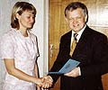

14-15 сентября 2004 г. во Владивостоке проходил I Дальневосточный региональный конгресс «Человек и лекарство». В конгрессе приняли участие более тысячи работников здравоохранения Хабаровского и Приморского краев, Камчатки, Сахалина и других регионов Дальнего Востока. В рамках конгресса было заслушано 6 пленарных докладов, проведено 16 симпозиумов, 16 научно-практических конференций и образовательных семинаров, прочитаны лекции для практикующих врачей. В дни конгресса был официально открыт Дальневосточный региональный центр дополнительного дистанционного образования врачей.
14-15 сентября 2004 г. во Владивостоке состоялся I Дальневосточный региональный конгресс «Человек и лекарство», который проходил по инициативе и под руководством Президента Российского национального конгресса «Человек и лекарство», академика РАМН А.Г. Чучалина. Во многом конгресс состоялся благодаря поддержке администрации края и, в частности, активности вице-губернатора по вопросам социальной сферы Б.И. Гельцера.
В конгрессе приняли участие более тысячи работников здравоохранения Хабаровского и Приморского краев, Камчатки, Сахалина и других регионов Дальнего Востока. В рамках конгресса было заслушано 6 пленарных докладов, проведено 16 симпозиумов, 16 научно-практических конференций и образовательных семинаров, прочитаны лекции для практикующих врачей.
МАКМАХ и НИИ антимикробной химиотерапии была организована школа по антибиотикам. Директор НИИ антимикробной химиотерапии, член-корреспондент РАМН, профессор Л.С. Страчунский и зам. директора НИИ антимикробной химиотерапии, д.м.н. В.В. Рафальский выступили с докладами, посвящёнными политике применения антимикробных препаратов в мире и в России, месту антибиотиков в лечении внебольничной пневмонии, практическим подходам к эрадикации H.pylori, аллергии на антибиотики, проблемам антибактериальной терапии инфекций мочевыводящих путей на современном этапе.
В дни конгресса был официально открыт Дальневосточный региональный центр дополнительного дистанционного образования врачей, который организован на базе Приморской краевой больницы и Владивостокского центра Всероссийской информационной сети по лекарственным средствам (ВИСЛС). 15 сентября 2004 г. будущие преподаватели системы ДО - сотрудники Центра ВИСЛС - успешно сдали экзамены комиссии в составе Л.С. Страчунского, В.В. Рафальского и доцента кафедры клинической фармакологии РУДН, д.м.н. Е.А. Ушкаловой. Два курса обучения - «Антимикробная терапия в клинике внутренних болезней» и «Антимикробная терапия социально наиболее значимых инфекций», созданные при поддержке Агенства США по Международному развитию (The United States Agency for International Development - USAID) и Фармакопеи США (US Pharmacopeia), - были безвозмездно переданы НИИ антимикробной химиотерапии СГМА Дальневосточному центру дополнительного дистанционного образования врачей, а будущие преподаватели курсов получили официальные свидетельства, подтверждающие их квалификацию в области применения антимикробных препаратов.
|  |
Вручение официальных свидетельств будущим преподавателям курсов дистанционного образования
(нажмите на картинку для просмотра увеличенного изображения) |